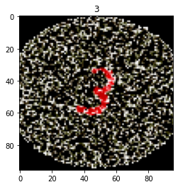

08-18-2023
Why isn't there more documentation on this?!
At work, I was tasked with creating a application for end users/clientele. Given that this work was slightly confidential, each library/software/method used had to be approved. Given that this app needed to authenticate users, existing options such as firebase could not be approved, and neither could any of the other libraries that were suggested. "Besides, there is a company LDAP server that most of our apps use to authenticate users", I was told. So began my difficult journey into learning about this technology.
The first task was to find out how to create a custom Ishihara Plate image. Luckily for me, there was an online tool for doing such a thing. Using a set of images of digits, I was able to (not quickly nor easily) create 14 images for each digit. These images were created with the predefined settings on the tool's webpage. The settings result in 7 images, while the negatives of each result in 14 images per digit.
In order to generate a substantial dataset, I would need to generate more images. The only method for me to do this would be to augment the images using Keras's image preprocessing library. The augmentations made to the images include:
# Augmenting Generator Object
data_generator = ImageDataGenerator(
rotation_range=30,
shear_range=0.2,
zoom_range=0.2,
fill_mode='nearest')After augmenting, I had 5600 Images in my dataset. Previously, I had augmented the images to also shift, however, as I noticed in my testing, the shifting affected my accuracy negatively.
The entirety of image augmentations were completed using this notebook.
At the time of creating this dataset, I had little to no idea of the powers of torchvision's library. Instead of creating a dataset, and then having torchvision handling the split, I took it upon myself to split the dataset. The notebook converts image data organized like this:
src_dir
----class1
----image1
----image2
----...
----class2
----image1
----image2
----...
----...Into a directory structure like this:
src_dir
----train_dir
----class1
----image1
----image5
----...
----class2
----image6
----image28
----...
----test_dir
----class1
----image14
----image54
----...
----class2
----image63
----image283
----...The train/test size is defined within the notebook. The notebook completes this task by computing a mask, and then placing each image in the appropriate folder. Lastly, it deletes any redundant/unused folders. Again, there are easier ways to complete the same task using the torchvision library.
Below, you can see the ease with which torchvision allows you to manipulate image datasets. I was able to create a validation dataset with only one line of code. Each dataset had been converted to tensor, and each image was normalized.
tensor_transform = transforms.Compose([transforms.ToTensor(),
transforms.Normalize((0.5, 0.5, 0.5), (0.5, 0.5, 0.5))])
train_dataset = ImageFolder(root = train_dir, transform = tensor_transform)
train_dataset, val_dataset = torch.utils.data.random_split(train_dataset, (4032, 448))
test_dataset = ImageFolder(root = test_dir, transform = tensor_transform)
 With this particular problem (detecting numbers within multi-colored images) pooling seemed to have a large effect on the test accuracy. In order to find out more, I decided to test out multiple types of pooling on one particular image. The poolings I tested were:
Upon looking at the results of the various poolings, it seemed that in most images, MaxPool2D seemed to do a good job of capturing the bigger picture. However, in certain cases, such as the one below, only AdaptiveAvgPool2D did the trick. For creating the model, I went with MaxPool2D.
In designing the architecture of the model, I decided to follow a convolutional approach. I started with two convolutional layers, each with batch normalization, ReLU, and MaxPool2D. Finally, I flatten to 5 fully connected layers.
Trained over 500 epochs, I am afraid that the complexity of the model, along with the large number of epochs, has led to the model being overfit. A testing accuracy of 99% seems to confirm my theory.